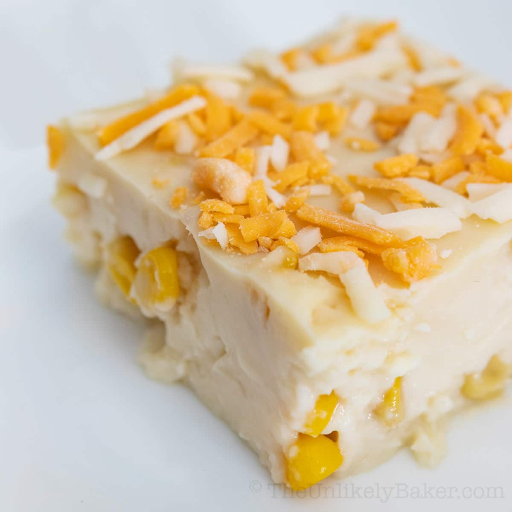
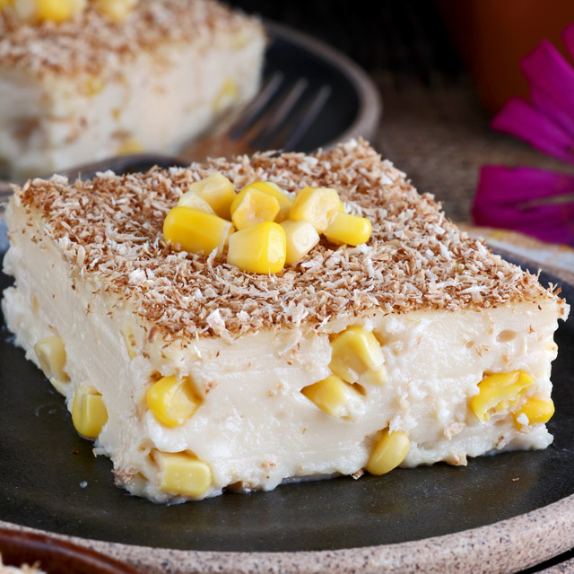
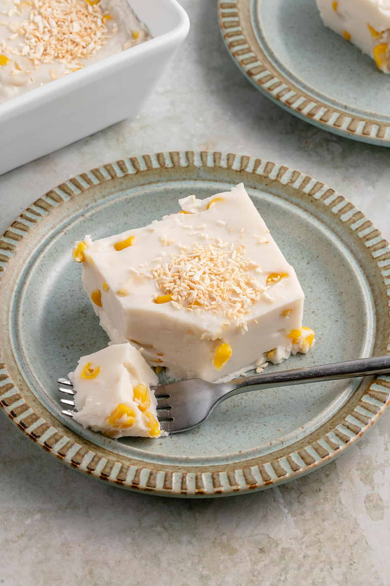
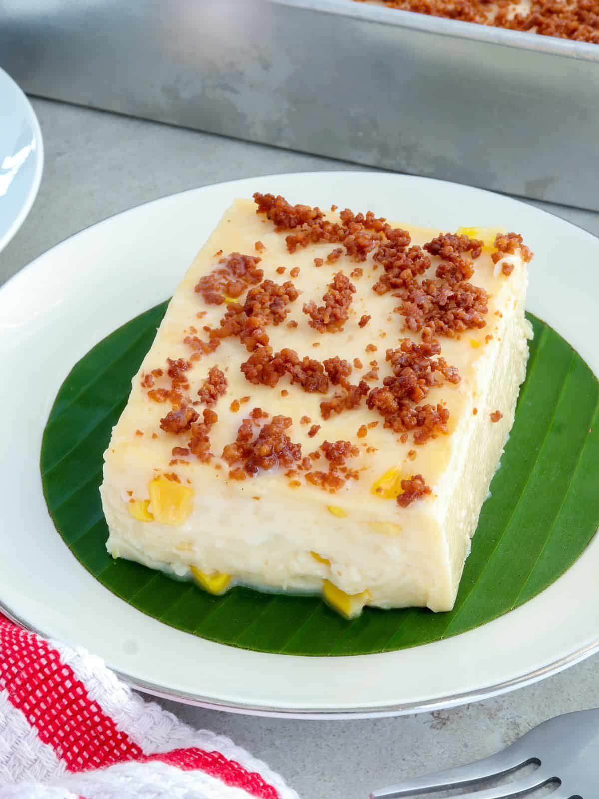
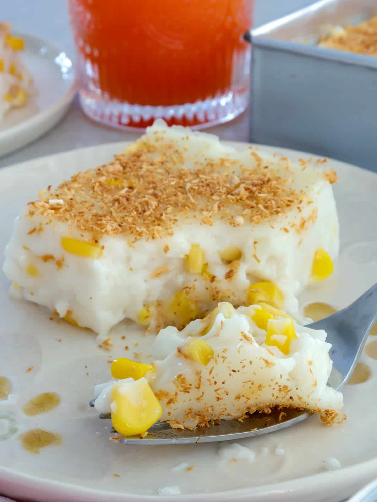

Maja Blanca Cake





History
Ang Maja Blanca ay isang traditional Filipino dessert na may impluwensya mula sa Spain, na dinala noong panahon ng Spanish colonization of the Philippines. Ang pangalan nito ay nangangahulugang “white delicacy,” at originally ay mas simple ang recipe nito. Sa Pilipinas, nag-evolve ito gamit ang coconut milk, cornstarch, at mais (corn), na nagbibigay ng kakaibang texture at lasa. Sa paglipas ng panahon, naging staple ito sa mga pista, handaan, at espesyal na okasyon, at kinikilalang isa sa mga classic kakanin na tunay na Pinoy.
Ingredients & Notes
Coconut milk
Cornstarch
Sugar
Whole corn kernels
Evaporated milk
Butter
Price
₱15